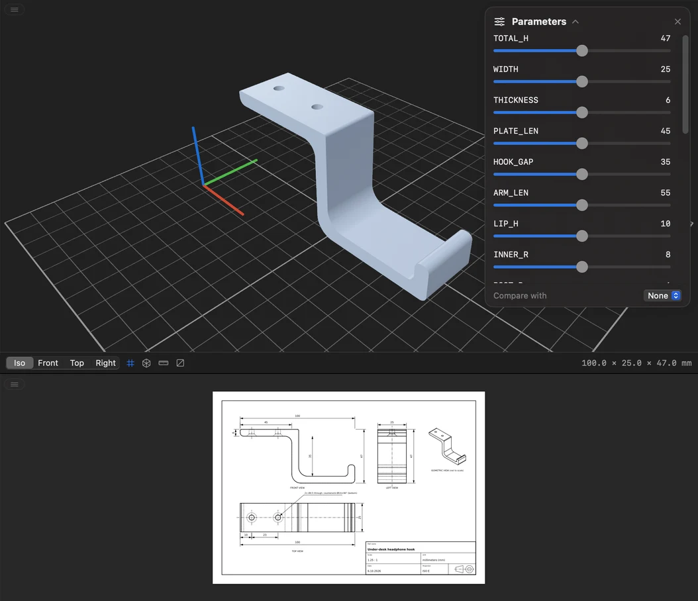
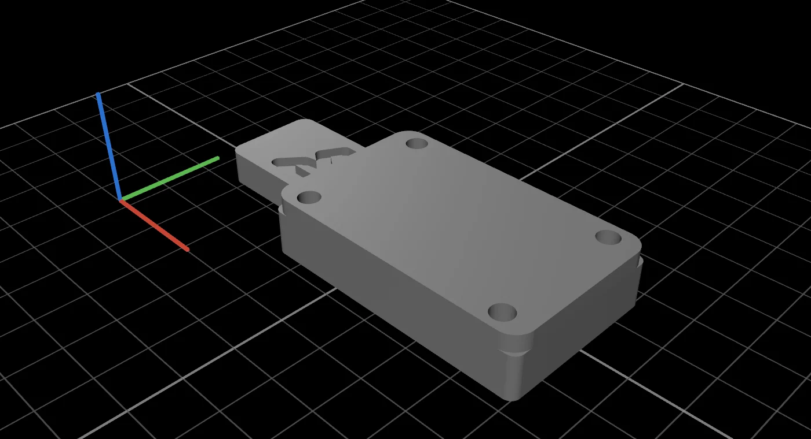

Describe a part.
Print it.
CAD Studio turns a sentence into a parametric build123d model, ISO drawings and a print plate, written and run by the Claude Code already on your Mac.

Real code. Every number is yours.
Claude writes a parametric build123d script, not a mesh. Each dimension is a named constant, and the app turns them into sliders: drag one and the model rebuilds in seconds, without asking Claude again.
Side view · first-angle projectionOverall height 47.0 mm
Drawings you can hand to someone.
Every model comes with an ISO first-angle drawing: dimensioned views, hidden edges, a title block. Assemblies get a parts list on the first sheet and one detail sheet per part, all in a single multi-page PDF.
Sheets from a push-to-open drawer latch made in CAD Studio, six sheets in all.


See how it moves before you print it.
Ask for an animation and Claude simulates the mechanism in Python: masses from volume and density, spring stiffness from beam theory, friction and your push. It checks the real solids for collisions along the way, and the app plays the result.
- Latches at
- 11.3 mm
- Releases at
- 20.0 mm
- Spring force, latched
- 2.85 N
- Collisions
- 0 of 97 frames
Assembled, exploded, on the plate.
Models with several parts open into their pieces. Hide a part, keep two together, or switch to the print plate: every part turned to its best orientation and laid out on your printer's bed, ready for the slicer.



Every change is a version.
Ask for a change and you get version 2. Compare it against version 1 in 3D, measure and section it, or jump back: the chat and what Claude remembers come back with it.

- Live progress. Tool calls, the code being written and Claude's thinking stream into the chat as they happen.
- Your printer, your units. Design rules for FDM, multi-material, resin or SLS, in mm, cm, m or inches.
- Everything exportable. STEP, 3MF, STL, the PDF drawing and model.py in one ZIP.
- Local. It runs your own Claude Code in a folder on your Mac. The app has no servers.
Three steps to your first part.
-
Sign in to Claude Code
Install Claude Code and run
claudeonce in Terminal. CAD Studio uses it as is. -
Install CAD Studio
Drag the app from the DMG into Applications. It isn't notarized, so allow it in System Settings → Privacy & Security, or run:
xattr -dr com.apple.quarantine "/Applications/CAD Studio.app" -
Describe a part
Pick your printer and units, create a project and say what you need. On first launch the app sets up Python and build123d for you with uv or Python 3.10–3.13.
Your next part is one sentence away.
git clone https://github.com/filippofinke/cad-studio && ./build.sh --install